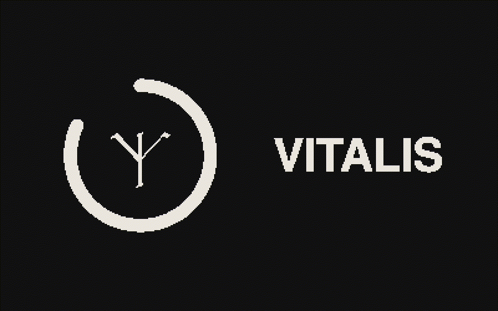
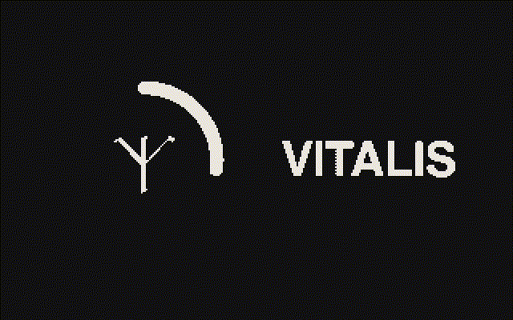
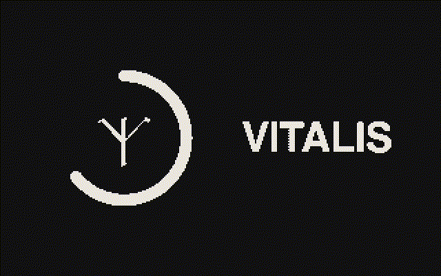
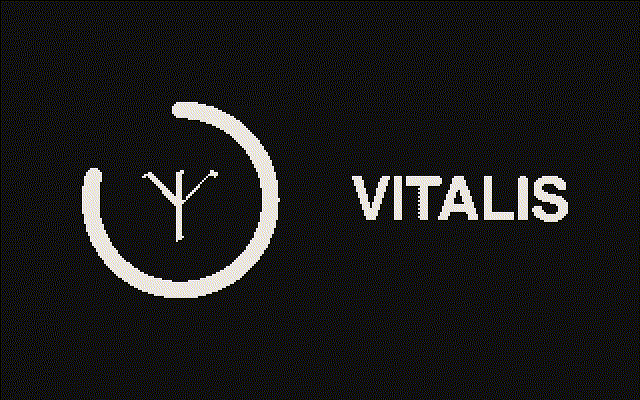
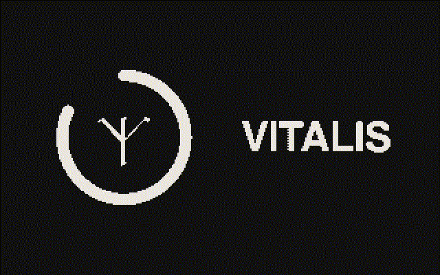

project 02 · ios app
vitalis
iOS · SwiftUI · Liquid Glass · 2026
Track what you actually eat, down to the micronutrient, without the app feeling like homework.
- Snap a photo or scan a barcode; every food is matched to USDA data
- Calorie ring, water and Apple Watch daylight on Home
- Full vitamin and mineral breakdown with 7-day trends
- Map of nearby butchers, farms and raw-food suppliers
Code · github.com/OmSilwaaal/primal


01
02
03 04
04
05frames 01–05 · loop
monochrome design, branded with the algiz rune from the app icon
why
Most nutrition apps stop at calories and feel like homework. I wanted one that shows every vitamin and mineral you hit or miss, and makes logging take seconds.
who
People eating whole and raw foods who care what is actually in their food: the ones buying from butchers and farms, not just counting calories.
what
Monochrome Liquid Glass on iOS, the calorie ring as the centre of Home, and the Algiz rune from the app icon used as the brand mark wherever there is space for it.
vitalis04